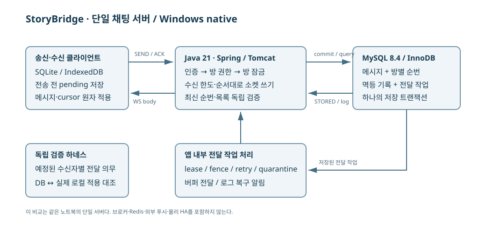
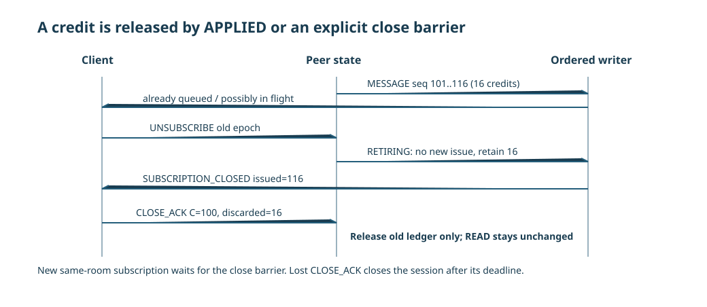
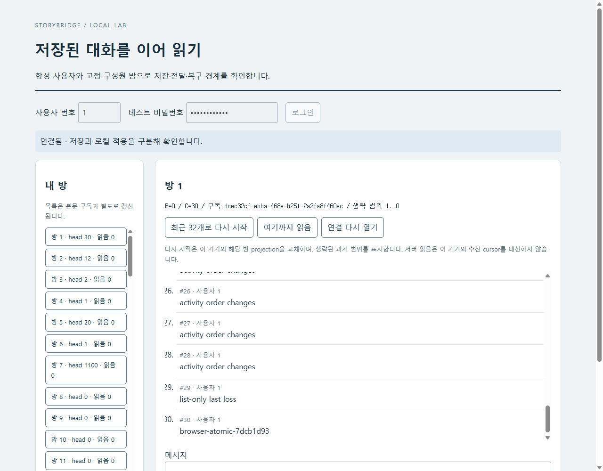

STORYBRIDGE · 설계와 검증
수신 flow control과 로그 기반 복구
credit·연속 cursor를 이용한 수신량 제한과 재접속 복구
다중 기기 환경에서는 같은 메시지라도 기기별 수신·적용 속도가 다르다. 서버는 연결별 미확인 전송량을 제한하고, 버퍼에서 제거된 메시지는 MySQL 로그에서 다시 조회하도록 구성했다. 복구 시작점은 소켓 전송 위치가 아니라 클라이언트가 연속 적용한 cursor다.
전송 시 credit을 예약하고 로컬 commit 이후의 APPLIED로 반환한다. 구독 해제 중에도 기존 전송량을 유지하며, CLOSE_ACK 또는 실제 연결 종료 시 회수한다. SQLite·IndexedDB 원자 적용과 비수신 TCP 연결의 종료를 각각 검증했다.
기준 구현에서 적용한 flow control·로컬 원자 적용·연결 종료 처리다. 최종 개선에서도 이 동작을 유지했다. 최종 구현의 비교 결과
live 전달과 비동기 로컬 적용
StoryBridge의 1:1·소규모 채팅은 같은 사용자의 여러 기기와 탭에 메시지를 전달한다. 같은 사용자의 두 탭이 다른 속도로 적용하고, 느린 탭이 다시 연결되며, 목록만 보는 사용자가 마지막 활동을 놓칠 수 있다. 이 구현은 저장된 방 로그를 권위로 두고 live 전달을 빠른 경로로 사용한다. payload를 버리는 경우에도 복구할 위치와 실패 분류가 남아야 한다.

cursor·head·floor의 역할
| 기호 | 의미 | 넘겨서는 안 되는 경계 |
|---|---|---|
| B | 명시적 bootstrap으로 생략한 prefix 끝 | 과거 미완료 의무를 자동 성공으로 바꾸지 않는다. |
| C | 로컬 DB에 연속으로 commit한 seq | socket 수신이나 READ만으로 전진하지 않는다. |
| L | gateway가 연속으로 발행한 seq | L+1 만 issue하며 미래 메시지로 gap을 건너뛰지 않는다. |
| O | 힌트로 관측한 최신 seq | 권위 snapshot의 H나 적용 완료 C를 대신하지 않는다. |
| H | 현재 회복의 고정 목표 head | 유입마다 계속 늘려 완료 조건을 움직이지 않는다. |
| F | 가장 오래 보관하는 본문 seq | C<F−1 이면 명시적 RESYNC_REQUIRED다. |
좁은 화면에서는 표를 좌우로 이동할 수 있습니다. 수치와 단위는 원본의 반복별 값을 유지했습니다.
C=101, L=101 인 상태에서 103 부터 도착해도 103 을 먼저 발행하지 않는다. 버퍼 기반 전달은 유한 live 버퍼에 보관할 수 있지만, 버퍼가 차면 본문을 폐기하고 DB의 102 부터 복구한다. 이 방식으로 window를 선점한 미래 메시지가 누락된 102 의 복구를 막는 교착을 방지한다. T09/T29 에서는 40 개를 저장한 뒤 첫 항목을 제외한 힌트를 역순으로 발행하고 마지막 항목을 중복 발행했다. 수신은 연속 순번으로 끝까지 적용됐다.
독립적인 primary head 확인은 1 초 간격으로 진행한다. 마지막 힌트 하나를 버리고 추가 메시지를 보내지 않은 시험에서도 head 차이를 발견하여 복구했다. 목록은 본문 구독 유무와 무관하게 별도 SQL로 갱신한다. room id를 기준으로 안정적으로 페이지를 순회하며, UI는 head/read를 후퇴시키는 늦은 응답을 병합하지 않는다. 활동순 목록의 변화를 pagination cursor로 쓰지 않았다.
credit 예약과 반환 조건
기본 버퍼 기반 전달은 구독별 미확인 본문 16 개·128KiB, 세션별 32 개, 별도 live 버퍼 128KiB를 둔다. 비교에서는 두 후보 모두 count 32/세션 64 를 사용하고, 버퍼 기반 전달의 128KiB window+128KiB live 버퍼와 수신자별 로그 전달의 256KiB window를 같은 구독별 총예산으로 맞췄다. 전역 예산은 버퍼 기반 전달 credit 32MiB+buffer 16MiB, 수신자별 로그 전달 credit 48MiB다. 프로세스 전체 세션 128 개, 세션당 구독 4 개와 control queue, DB 작업 큐도 별도로 제한했다. byte 원장은 실제 JSON UTF-8 길이를 사용하고 관측용 buffer 추정에는 본문 외 고정 overhead를 더한다.
issue 시 credit를 예약한다. writer queue에서 꺼냈다는 이유로 반환하지 않는다. socket을 지나 클라이언트가 projection과 cursor를 commit하고 cumulative APPLIED를 보고해야 반환한다. ACK는 등록된 subscription epoch와 C≤cursor≤L을 확인한다. 이미 처리된 ACK는 중복 해제하지 않고, 미래·다른 epoch·폐기한 구독 ACK는 거절한다. 기본 읽음은 사용자의 membership.read_seq에 GREATEST로 저장하는 별도 상태다.
private boolean issue(Sub s,Store.Message message){
Peer p=s.peer;if(p.closing||s.retiring||message.seq()!=s.l+1)return false;
String text=encode(Map.of("type","MESSAGE","sub",s.id,"epoch",s.epoch,"message",message));int n=bytes(text);
if(s.outstanding.size()>=windowCount||p.credits>=sessionCount||n>windowBytes-s.bytes)return false;
if(!reserve(globalCredit,n,GLOBAL_CREDIT)){metrics.inc("global_credit_rejected");return false;}
if(!p.frames.offer(new Frame(text,0))){globalCredit.addAndGet(-n);close(p,"WRITER_QUEUE_LIMIT");return false;}
s.outstanding.put(message.seq(),new Issued(n,System.currentTimeMillis()));s.l=message.seq();s.bytes+=n;p.credits++;
metrics.inc("frames_issued");metrics.add("issued_bytes",n);metrics.add("credit_bytes",n);metrics.inc("credit_count");return true;
}구독 해제 시 in-flight credit 처리
구독을 해제하자마자 credit를 반환하면, 실제 socket에 남은 16 개를 유지한 채 같은 방을 재구독하여 또 16 개를 적재할 수 있다. 반복하면 설정상 window와 실제 적재량이 분리된다. 이 구현은 route만 먼저 제거하고 구독을 RETIRING으로 유지한다. 새 issue를 막되, 이미 발행한 원장과 credit는 유지한다.

SUBSCRIPTION_CLOSED는 같은 ordered writer에서 기존 본문 뒤에 놓인다. 클라이언트는 이 경계를 받은 후 최종 로컬 cursor와 폐기 수를 CLOSE_ACK로 보낸다. 서버는 이전 구독의 원장만 해제하고 CLOSE_CONFIRMED를 반환한다. 같은 방의 교체 구독은 이때까지 거절된다. CLOSE_ACK가 없으면 3 초 뒤 세션을 닫는다. 종료 API 호출 이후 writer 종료와 원장 회수까지 확인했다.
실제 시험은 24 개의 의무 중 16 개를 발행한 뒤 ACK를 보내지 않고 구독을 해제했다. 새 구독은 거절됐고 credit는 16 으로 남았다. 미래 ACK와 오래된 epoch를 거절한 후, C를 전진시키지 않는 폐기 CLOSE_ACK로만 이전 원장을 닫았다. 다른 탭의 구독은 오래된 연결 종료에 영향을 받지 않았다.
blocked write timeout과 TCP 연결 회수
peer의 직렬 상태 처리는 짧은 monitor 안에서 수행하고 DB·socket I/O를 그 밖으로 보냈다. DB 실행기는 버퍼 기반 전달 worker 8 개·최종 수신자별 로그 전달 worker 4 개, 공통 대기열 128 개이며, socket은 peer별 유한 frame queue와 독립 virtual writer를 쓴다. 쓰기를 기다리는 동안 APPLIED·만료·종료·다른 방 상태가 같은 직렬 실행기를 점유하지 않도록 분리했다. virtual thread 사용과 별개로 적재량과 write timeout을 제한한다.
선택 Tomcat 10.1.55 의 native BLOCKING_SEND_TIMEOUT을 1.5 초로 지정하고 독립 tick의 write watchdog도 둔다. 종료 close wait는 1 초, 비정상 close write는 50ms로 제한했다. timeout 동작은 실제 소켓에 backpressure를 발생시켜 검증했다. 테스트는 8,000-byte 본문 1,100 개를 먼저 저장한 뒤 TCP 수신 버퍼를 1KiB로 줄인 두 실제 socket에서 읽기를 중단했다. 이때만 유한 window를 확대하여 OS 송신 버퍼까지 압력이 닿게 했다. 기본 window에서는 OS 버퍼가 차기 전에 애플리케이션 credit 제한에 도달한다.
추가 SEND 없이 약 1.5 초 동안 멈춘 write가 관측됐고 두 writer가 종료됐다. 실제 thread dump와 10Hz 상태 표본을 보존했다. 실제 TCP 수신 중단으로 blocking write를 재현했다. 동시에 오래된 데이터의 압력을 주는 별도 설정이므로 대표 성능 실행의 수치와 섞지 않았다.
writer 종료와 WebSocket isOpen=false만으로는 실제 연결 회수를 확인할 수 없었다. TCP 읽기를 멈춘 두 연결의 OS 상태를 확인하자 FIN_WAIT1에 남아 있었다. 상대의 수신 window가 열리지 않으면 graceful close 중에도 미전송 데이터와 연결이 유지될 수 있다. 초기 비수신 TCP 시험은 앱 상태까지만 확인한 결과로 정정하고, 당시 구현과 결과를 보존했다.
두 후보에 동일하게 Tomcat의 connectionLinger=0을 적용하여 native TCP close를 abort하도록 했다. 기존 WebSocket write/close deadline과 함께 실제 transport를 종료한다. close 때 미확인 bytes가 폐기될 수 있지만 이를 APPLIED로 계산하지 않는다. 저장 성공은 DB commit으로 이미 확정되고 HTTP 응답이 끊기면 같은 SEND 키로 결과를 확인한다. 정상 HTTP 응답·구독 교체·재접속도 회귀 시험했다.
비수신 TCP 연결 회수 시험에는 OS 소켓 확인을 추가했다. socket write가 막힌 동안 다른 방의 SEND와 로컬 commit이 1초 이내에 진행하는지, 두 writer가 종료된 뒤 클라이언트가 socket을 닫기 전에 서버 소유의 해당 TCP 연결이 사라지는지 확인했다. 버퍼 기반 전달과 수신자별 로그 조회 모두 이 조건을 통과한 뒤 대표 비교를 다시 측정했다. 이전 결과는 별도로 보존했으며 새 코드의 지연 결과로 재사용하지 않았다.
로컬 원자 적용과 APPLIED 처리
Python 수신기는 socket reader와 SQLite applier를 분리했다. 본문·messageId/hash·연속 cursor를 같은 SQLite FULL synchronous 트랜잭션으로 적용한 뒤 APPLIED를 보낸다. 본문 INSERT 전후, cursor 갱신 후, commit 전후에 별도 수신 프로세스를 강제 종료했다. commit 전에는 재시작 후 이전 C가 남았고, commit 후에는 중복 메시지를 같은 결과로 확인했다. 계정별 IndexedDB와 SQLite store generation은 새 로컬 저장소가 이전 cursor만 재사용하는 것을 막는다.
실제 SQLite max_page_count를 낮춰 SQLITE_FULL을 일으킨 경우 cursor는 전진하지 않았고 APPLIED도 보고하지 않았다. 그 사이 retention이 지나간 복구는 RESYNC_REQUIRED로 분류했다. 공간을 복구한 뒤 명시적 bootstrap을 선택하여 새 B를 만들었으며, 보관 초과 이전 의무를 완료했다고 쓰지 않았다. 전송 측 pending도 첫 SEND 전에 저장하며 결과를 모르면 같은 key/body/hash를 유지한다.
브라우저 검수에서는 별도의 결함을 발견했다. Promise.resolve(fn(tx))에서 fn이 동기적으로 throw하면 Promise는 거절되지만 tx.abort가 호출되지 않았다. 일부 IndexedDB 변경이 commit되고 재접속 시 INVALID_CURSOR가 드러났다. 동기 호출을 try/catch로 감싸고 비동기 rejection도 abort하도록 고쳤다. 실제 Chrome 재시험은 원자적 abort, 늦은 목록 응답, cursor를 유지한 재접속을 확인했다. 계정 변경은 새 페이지에서 새 계정 DB로 시작하도록 제한했다.
실제 브라우저의 원자 적용과 재접속

복구 완료 조건과 처리 용량
영구적으로 적용하지 않는 수신자는 24 개 의무 중 wire로 16 개만 받고 끝났다. 로컬 commit은 0, 미완료는 24 로 남겼다. ACK deadline으로 연결과 자원은 회수됐으나 전달 복구는 실패했다. 별도의 일시 slow-applier 시험에서는 ACK 유실과 backlog를 함께 만들고 처리 여력을 회복시켜 고정한 목표 순번 H까지 연속으로 적용됐는지와 최종 cursor를 확인했다.
G8 의 진전은 의존성·처리 여력 회복 및 보관 범위가 유효하다는 조건을 가진다. 영구 단절, 지속적인 μ≤λ, 보관 초과를 분모에서 제거하지 않는다. 검증은 20 회 churn과 수 초~수십 초 장애를 대상으로 했다. 장기 운영 soak와 OS·디스크·전원 장애의 복합 조건은 검증하지 않았다.
각 단계의 원본 시험 인덱스와 적용 시험 표에서 실패 이력까지 확인할 수 있다. Tomcat WebSocket timeout 공식 설명은 설정 근거이며, 실제 회수 판단은 원본 socket 압력 시험에 근거한다.
제약 사항
SQLite·IndexedDB는 영속 적용과 장애 복구를 검증했다. 대규모 k6 시험은 메모리 수신 성능을 측정하므로 두 결과의 처리량을 직접 비교할 수 없다.